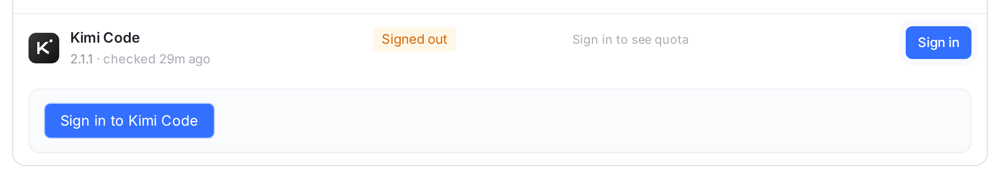
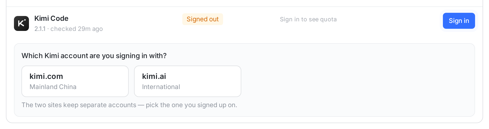
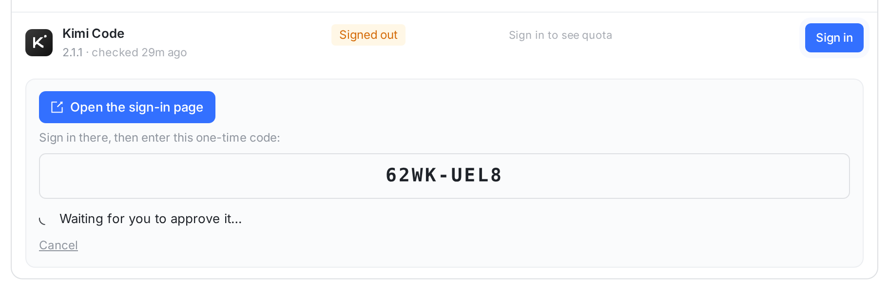
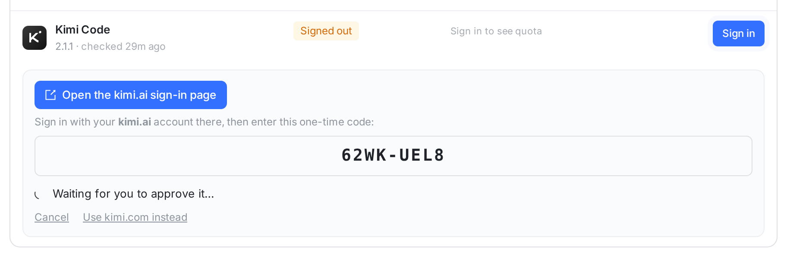
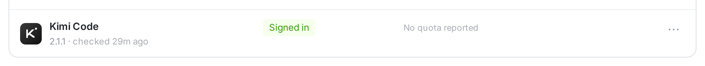
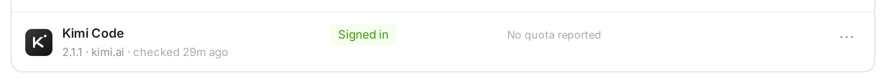
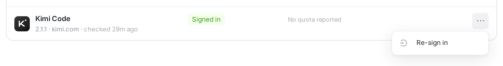
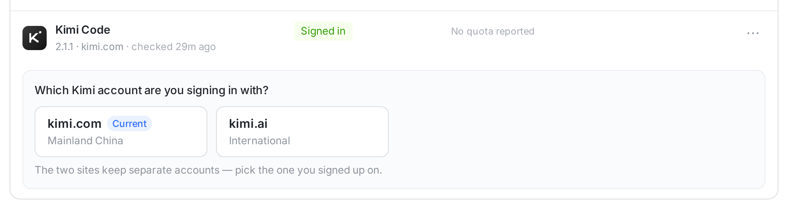
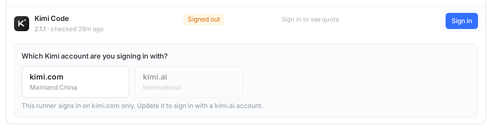

kimi.com（中国大陆）和 kimi.ai（海外）是两套账号，登录页、API、订阅都不通。Kimi Code 2.1.1 已经支持 kimi login --region mainland-cn|global，但 Orbit 跑的是不带参数的 kimi login：首次登录由 CLI 按安装脚本写下的 ~/.kimi-code/region 决定站点，而 Orbit 用的是 code.kimi.com 的安装脚本，所以永远去 kimi.com——kimi.ai 的账号在 Orbit 里登不上，登错了也换不回来。下面每张都是真实 web 控制台截图（同一套组件和样式，接口数据是造的）；「改后」是把提案写进组件后的原型截图。

AA 点「Sign in to Kimi Code」→ runner 跑 kimi login，去哪个站点由 CLI 自己定：这台机器从没登过就看安装渠道（code.kimi.com = kimi.com），登过就沿用上一次。用户没有任何地方能说「我是 kimi.ai 的账号」。

11 两个选项各写域名和地区，点哪个就直接在那个站点开始登录（kimi login --region mainland-cn / global）。点击次数和现在一样（Sign in → 选站点）。不预选：选错的代价是到了登录页才发现账号不在，所以让用户自己点。

BB 「Open the sign-in page」打开的其实是 auth.kimi.com。kimi.ai 的用户在那边登不上（或者登进一个空的 kimi.com 账号），回到这里也看不出原因，只能 Cancel。

2 32 按钮和提示都带上站点：「Open the kimi.ai sign-in page」「Sign in with your kimi.ai account there」。站点从 CLI 打印出来的登录 URL 的域名读（auth.kimi.ai / auth.kimi.com），显示的就是用户马上要打开的页面，不会和实际不符。
3 「Use kimi.com instead」：取消这次登录，在另一个站点重新开始——不用退回上一步。

CC 「Signed in」看不出登的是哪个站点的账号；会话花的是那个站点的订阅。想换站点只能去机器上开终端。

4
5
64 版本号后面写站点：2.1.1 · kimi.ai。5 换站点不加新入口，走现有的 ⋯ → Re-sign in。6 打开的是同一个选择，当前站点标 Current；点另一个就在那边登录，CLI 会改写 config.toml 里的 Kimi provider 和模型列表，之后新会话都走新站点的订阅。

77 runner 没声明 kimi-login-region/v1（Orbit runner 版本旧）时，它只会跑不带参数的 kimi login：kimi.ai 置灰，下面一句话说清楚要升级这台 runner。服务端同样拒绝给这种 runner 下发 region，不会悄悄登到 kimi.com。
RunnerSignInView.swift，同样改（见 02-ios）。orbit doctor 的终端登录也要先问站点，再跑 kimi login --region …。dto.ts：KimiRegion = 'mainland-cn' | 'global'；POST /runners/:id/login 的 body 加 region（仅 kimi）；RunnerEngineHealth.kimiRegion（第 4、6 点读它）。login_region（migration 0397），随 LoginCommand 下发；engine ≠ kimi 带 region 直接 400；runner 没声明 kimi-login-region/v1 时，下一次心跳把这次登录标为失败并说明要升级 runner，不降级成裸登录。login.go / kimi_region.go：kimi login --region <region>；先用 kimi login --help 确认 CLI 认识 --region（同 Codex 的 --device-auth 探测）。太旧的 Kimi 选 kimi.ai 直接失败并提示更新引擎，选 kimi.com 退回裸 kimi login。设备码 URL 的正则本来就不限域名，不用改。kimi provider list --json（CLI 自己读的 config.toml）里取 managed:kimi-code——oauthHost = auth.kimi.ai 是 global，key 为 oauth/kimi-code 是 mainland-cn，再看 API 地址；没登过就不报（不读安装标记，免得把「从没登过」说成 kimi.com）。换了站点也会让 runner 重读模型列表。kimi acp authenticate）、模型列表（kimi provider list --json）、会话里的 KIMI_CODE_HOME overlay 都跟着 CLI 自己的 config.toml 走，登到哪个站点就用哪个站点的 API。